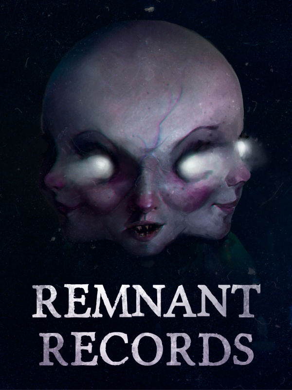

Remnant Records
Remnant Records
Details
|  | |
| Playtime | Not Played |
| Last Activity | Never |
| Added | 11/10/2024 15:59:11 |
| Modified | 18/05/2025 1:25:02 |
| Completion Status | Not Played |
| Library | Steam |
| Source | Steam |
| Platform | PC (Windows) |
| Release Date | 23/01/2024 |
| Community Score | 74 |
| Critic Score | |
| User Score | |
| Genre | Indie |
| Developer | Noctiluca Studio |
| Publisher | Noctiluca Studio |
| Feature | Co-Operative Multiplayer Single Player |
| Links | Steam YouTube Discord Twitch |
| Tag | 3D Action Atmospheric Co-op Dark Demons Detective First-Person Horror Indie Investigation Multiplayer Mystery Online Co-Op Procedural Generation Psychological Horror Realistic Singleplayer Supernatural Thriller |
Description

To help ghosts cross over to the other side, you must first understand them.
Remnant Records is a horror investigation game for 1 to 4 players, in which you are the newest recruit of an agency that deals with these paranormal matters. Choose the role that fits your favourite game style, and face complex ghosts, each with unique behaviors and reactions. Your job will be to exorcise and free them with the help of your team.
To exorcise a spirit, you first have to understand it. Search the place and find the clues left behind: diaries, newspaper cuts, unusual objects. Understand the person they was before their death, and gather as many items that are closely related to them as you can. Once you're ready, all you've got left to do is start the exorcism, pray you've understood everything correctly... and survive until the ghost is freed from this world.

Features:
- Unique and terrifying ghosts, with their own appearance and behaviours. Encounter the mannequin that takes advantage of light and shadow to catch you off-guard, the blind runner that will find you if you make the slightest noise, and many other horrifying spirits.
- Four different roles that can make every player have a substantial impact on the mission. Play as the bodyguard that can break down doors, or as the medium that closely connects with the world of the dead.
- Procedural contracts that tell a new and fresh story to decipher with every mission.
- Level up and unlock multiple features, such as customizable difficulty and modifiers that will make every mission a new experience. Set the difficulty of the ghost and of the investigation separately and make the game fit your playstyle.
- Cooperative gameplay with up to three other friends (or strangers), complete with in-game proximity voice chat. Ghosts also have unique abilities that only appear in multiplayer.
- Become an experienced ghost hunter through your missions, getting new knowledge as a player and filling your exorcist diary with strategies to survive the next contract.